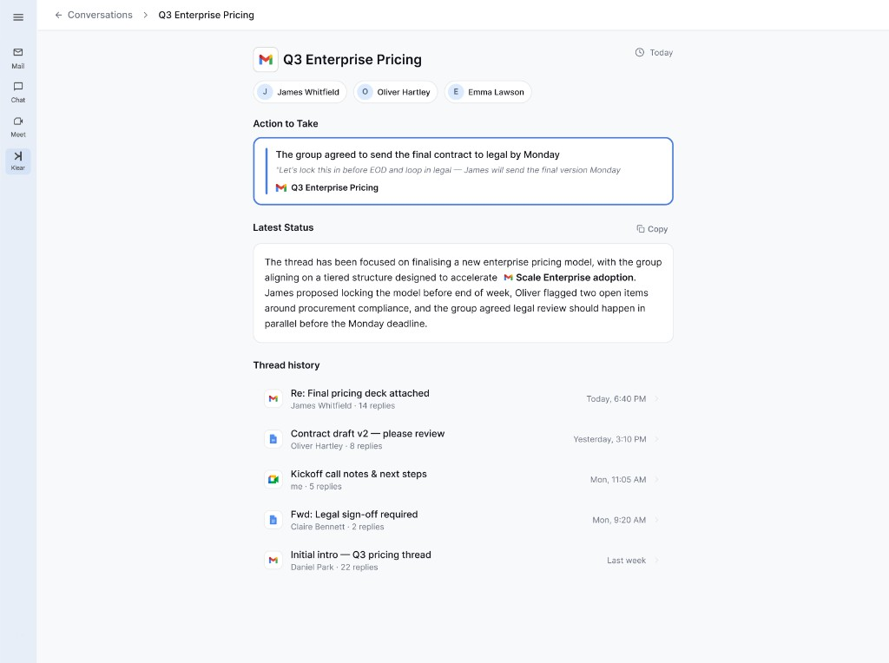
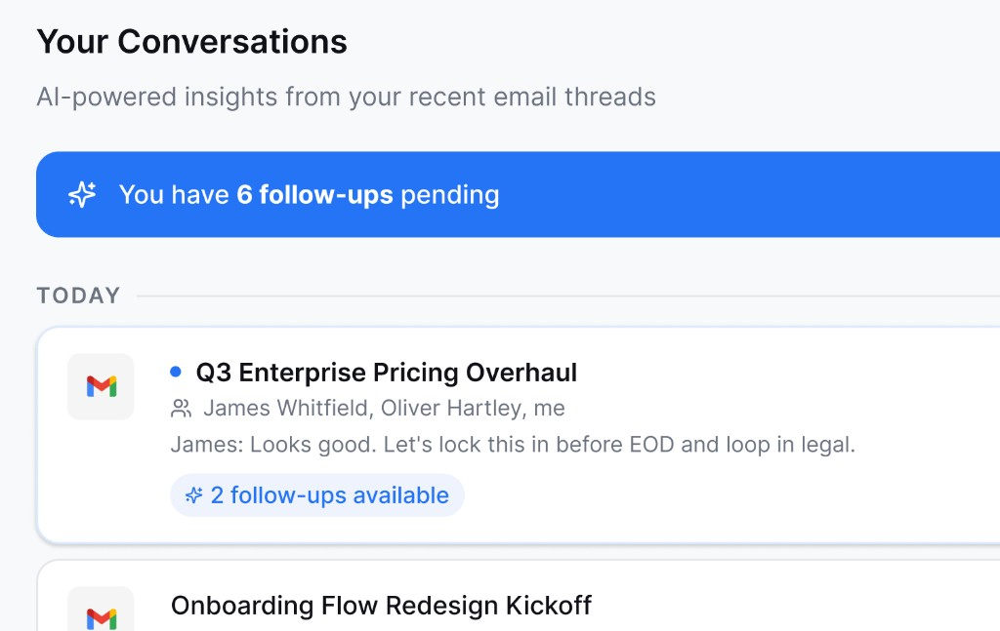
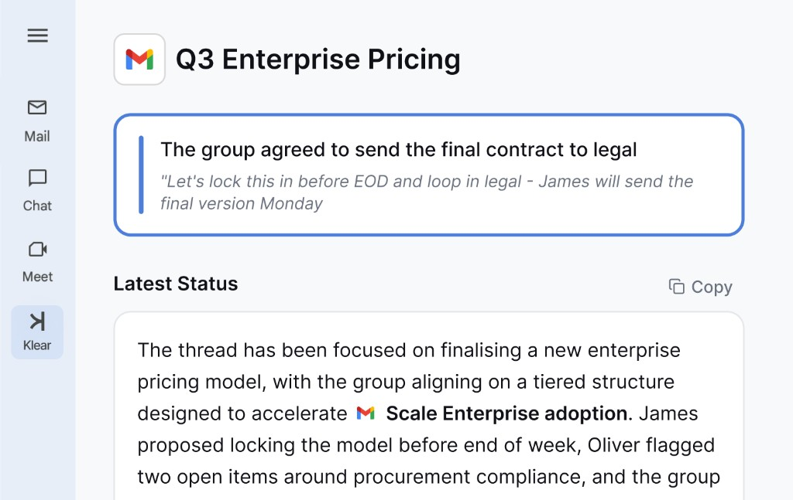

For founders
Never lose the thread.
A Chrome extension for Gmail that gives founders a lightweight CRM. See which conversations need attention now, with context from the threads you already have.

Pick up any thread right where it left off. Klear keeps the context so you don't have to.
Features
Same inbox. Full context.
Turn scattered emails into a lightweight CRM—priority threads and contact summaries—without leaving the inbox you check every day.
-

Priority
Cut through inbox noise. We surface 1:1 and group threads that need a reply or follow-up, so investors, clients, and leads do not slip.
-

Contact view
Each contact gets an auto-built profile: where things stand, the last or next action from the thread, and key interactions over time.
Zero setup
Connect Gmail and start in seconds. Klear lives inside your inbox—no separate login, no training, no change to how you work.
Ready in seconds.
Stop reconstructing context before every call. Add Klear to Chrome and keep every relationship clear from Gmail.
Add to Chrome